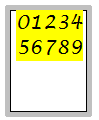

Format a bulleted or numbered list
You can use the Text command bar and the Text Box Properties dialog box to create and format bulleted and numbered lists.
Create a list from new text
-
Select the Text command
 , and then click where you want to begin a text string, or click+drag to create a
text box.
, and then click where you want to begin a text string, or click+drag to create a
text box. -
On the Text command bar, click Bullets and Numbering
 , and then do one of the following:
, and then do one of the following:-
To create a bulleted list, choose Bullet, and then select the type of bullet.
-
To create a numbered list, choose Numbering, and then select the type of number.
-
-
Type the first line of text, and then press Enter.
The list number or bullet formatting is displayed when you begin typing.
-
Type the second line of text and press Enter to continue the list.
Tip:-
You can change list number punctuation—1., or 1), or (1) or 1—, using the Format list on the Bullets and Numbering tab in the Text Box Properties dialog box.
-
To add a space between the number and the text, use the spacebar.
-
You can choose any of the following list control options by clicking the Bullets and Numbering button
on the Text command bar:-
Restart Numbering
-
Continue Numbering
-
Increase indent
-
Decrease indent
-
-
Create a list from existing text
-
In the text box or text string, double-click or click and drag to select the text that you want to format as a list.

-
On the Text command bar, click Bullets and Numbering
. -
Do one of the following:
-
To create a bulleted list, choose Bullet, and then select the type of bullet.
-
To create a numbered list, choose Numbering, and then select the type of number.
-
Stop a list
-
After typing the last line in a list, press Enter to end the paragraph and start a new line.
-
On the Text command bar, click Bullets and Numbering
. -
On the Bullets and Numbering menu, click No List.
Change list numbering
You can begin a numbered list with a different value. You can also restart list numbering.
-
Do one of the following:
To
Do this
Begin a numbered list with a different value
-
Place the cursor in the list where you want to change the starting value.
-
On the Text command bar, click Properties
 .
. -
On the Bullets and Numbering tab in the Text Box Properties dialog box, type a value in the Start at box.
Tip:-
You can specify a starting value by entering an integer, and its equivalent value in the selected number style is displayed.
-
The range of valid starting values varies with the number style selected.
To learn more about starting values, refer to the help topic, Bullets and Numbering tab.
-
To restart list numbering
-
Place the cursor in the list where you want to restart the numbering.
-
On the Text command bar, click Bullets and Numbering
. -
From the menu, choose Restart Numbering.
-
Change the color of bullets
Changing the color of the text in a list also changes the color of the bullet.
-
Select the list text where you want to change the bullet color. To select multiple lines, use click+drag.
Even though the bullets are not yellow highlighted, they are selected, too.
-
On the Text command bar, click Text Color.
-
Click the color block you want to use.
Tip:To use different colors in a single list, be sure to select from the end of one line through the next.